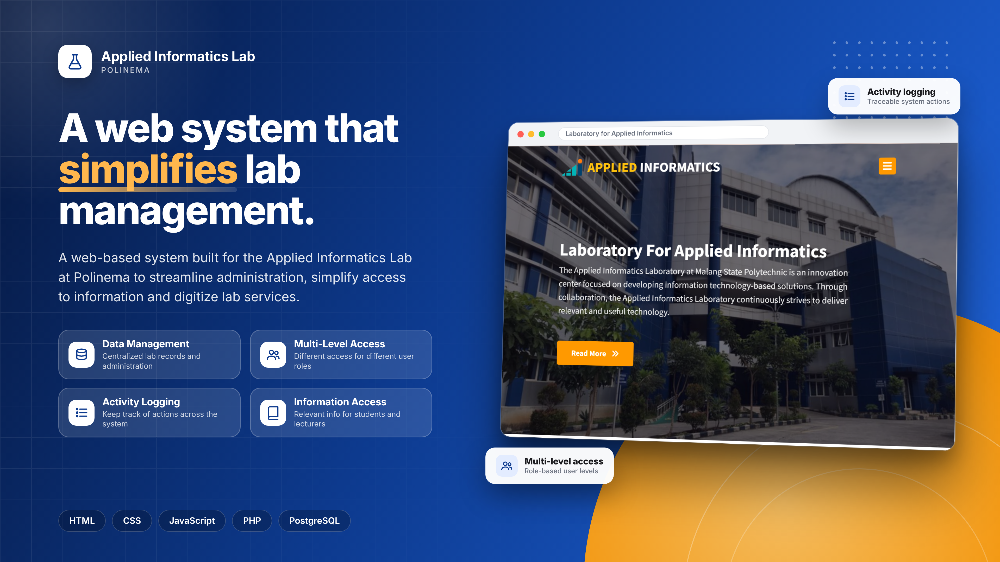
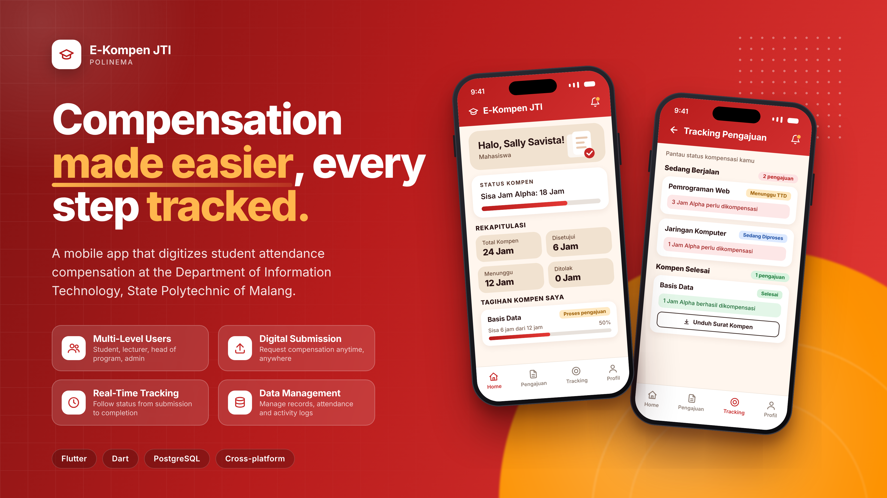
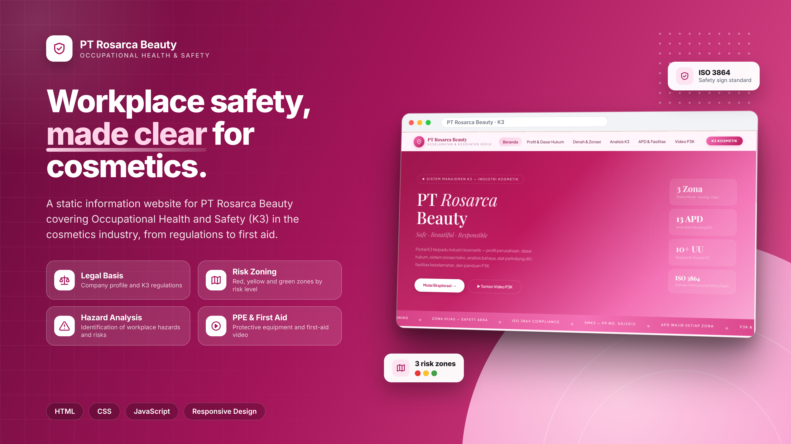

Executive Secretary
2025Himpunan Mahasiswa Teknologi Informasi (HMTI)
National Seminar 2025
- Secretariat
- Event Operations
Aspiring QA Engineer · Software Testing · Database Management
I'm a Business Information Systems (D-IV) student at State Polytechnic of Malang with hands-on experience in web development, database management and information systems. I care about attention to detail and reliability, and I'm eager to help build high-quality systems that work the way users expect.

Throughout my studies at State Polytechnic of Malang, I have built a solid foundation in web development, database management and information systems through coursework and hands-on projects.
My academic projects have taught me to solve problems methodically, pay close attention to detail, collaborate within a team and manage my time against deadlines. I'm particularly interested in Quality Assurance, software testing and database management, and I'm eager to deepen these skills through real-world experience.
Interested in verifying that software behaves correctly, consistently and as users expect.
Experience designing and working with relational data using PostgreSQL.
Built web systems with HTML, CSS, JavaScript and PHP, and a cross-platform app with Flutter.
Roles held at the Information Technology Student Association (HMTI).
Himpunan Mahasiswa Teknologi Informasi (HMTI)
National Seminar 2025
Himpunan Mahasiswa Teknologi Informasi (HMTI)
Semarak, Information Technology Sports Week 2025
D-IV Business Information Systems
Department of Information Technology
Science Major
Senior High School
BISA AI Academy (PT BISA ARTIFISIAL INDONESIA)
Digital Talent Scholarship
Dicoding Indonesia
Systems built through campus Project Based Learning courses. Select a project for the full breakdown.

01Business process management system for the Applied Informatics Lab at Polinema
A web-based system built to streamline lab administration, make information easier to access and support the digitalization of lab services.
This project was developed as part of Project Based Learning at the Applied Informatics Lab at Polinema. The goal was to build a web-based system that addresses the lab's business process management needs, improves administrative efficiency, simplifies access to information and supports the digitalization of lab services.
The system was built with native technologies: HTML, CSS and JavaScript on the frontend, and native PHP on the backend, backed by a PostgreSQL database.

02Cross-platform mobile app for student compensation management
A mobile app that replaces manual compensation procedures with a more organized, transparent and accessible digital process.
This project was developed through Project Based Learning and focuses on a mobile application that digitizes how student compensation is managed on campus. It replaces manual procedures so that the service is better organized, more transparent and easier to access.
The app is built with Flutter and Dart so it runs cross-platform, and connects to a backend that uses PostgreSQL as its database.

03Static website on workplace safety (K3) for the cosmetics industry, PT Rosarca Beauty
An informational website covering safety regulations, risk-based zoning, hazard analysis, protective equipment and first-aid education.
This static website for PT Rosarca Beauty is a web-based information system that presents Occupational Health and Safety (K3) information tailored to the cosmetics industry. The home page introduces the company with the tagline "Safe · Beautiful · Responsible", reflecting its commitment to workplace safety.
The site's call-to-action buttons, "Start Exploring" and "Watch First Aid Video", encourage interaction, and the responsive interface makes information quick and easy to reach. The home page also summarizes key figures such as the number of zones, types of PPE, number of regulations and the safety standard used (ISO 3864).
I'm looking for opportunities to apply my skills, learn from experienced teams and contribute to high-quality information systems. Feel free to reach out.
sallyysavista@gmail.com